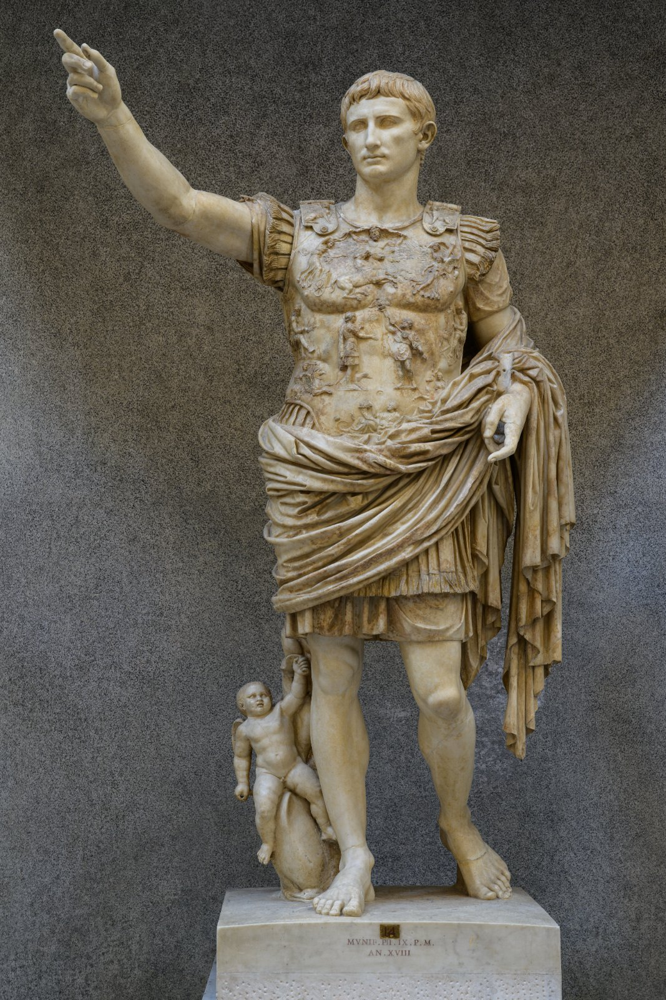
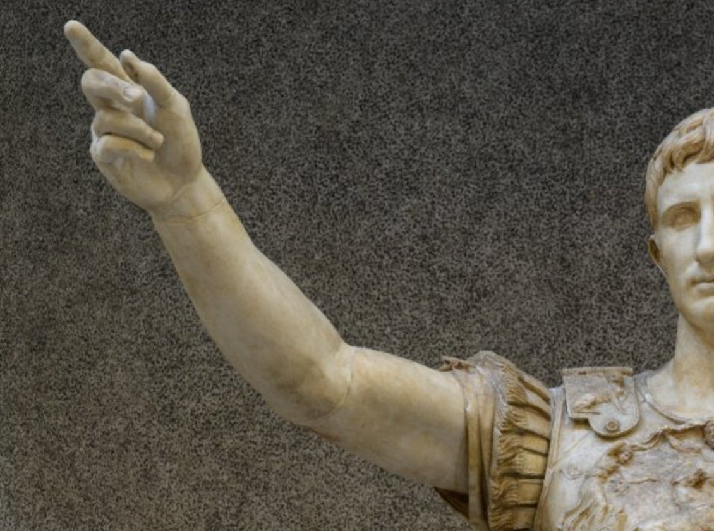
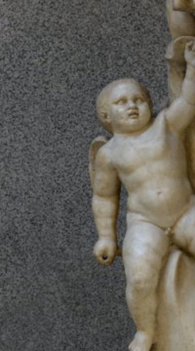
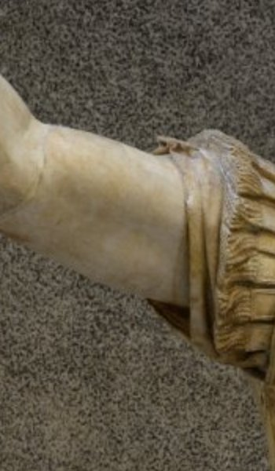

adlocutio · the gesture of a general addressing his troops.
Pax Romana · the peace of Rome.
Pax Deorum · the peace of the gods.
Princeps · "first citizen" — Augustus's title.
Cuirass · the moulded breastplate.
The Amazonomachy at the Temple of Apollo, Bassae: a frieze of Greeks fighting Amazons.
A symbol of power that worked through myth — civilisation triumphing over the chaotic outsider, displayed inside a sacred temple.
Today: a Roman answer to the same question — how do you put power into stone?
The Greeks built temples for the gods. The Romans built statues of the man.
Born Octavian, the great-nephew and heir of Julius Caesar.
After a century of civil war, he defeated his rivals at Actium (31 BC) and became Rome's first emperor.
In 27 BC the Senate gave him the name Augustus — "the revered one".
He ruled until his death in AD 14 — over 40 years of one-man rule, dressed up as a return to old Roman virtue.
"I found Rome a city of brick and left it a city of marble."
— Augustus, attrib. (Suetonius)
A Rome of marble — temples, fora, monuments worthy of empire.
The peace of Rome — end of civil war, victory over enemies abroad.
The peace of the gods — restoring traditional religion and divine favour.
Make sure Romans see him — and his Julian line — as Rome's saviour.
Keep these four numbers in your head — we'll come back to them.

Just over 2 metres tall, originally painted in colour.
A copy in marble of a (lost) bronze original, probably commissioned in Augustus's lifetime.
Found in 1863 at the villa of Livia, Augustus's wife, just north of Rome.
Before we read the detail — what mood does it strike? What does the figure want you to feel?
Set up in the country house of his wife Livia, on the road north out of Rome.
An image for insiders — family, friends, dignitaries hosted by Livia.
Many copies of this image were shipped around the empire — the "official portrait" of Augustus.
Why reproduce the same image across the empire?
The original was almost certainly bronze, displayed publicly. This marble version was the family's keepsake copy.
Pose. Face. Feet. Every choice the sculptor makes is a sentence.

Right arm raised, fingers extended — the classic pose of a general giving an adlocutio, an address to his soldiers.
Contrapposto stance — weight on his right leg, body in a relaxed S-curve. Borrowed directly from the Greek Doryphoros of Polyclitus.
He looks past us, into the distance — calm, decisive, in command.
Which of Augustus's four aims does the pose most clearly serve?
Augustus is shown as a young man in his prime — but he was probably nearly 80.
His features are idealised: smooth skin, sharp cheekbones, neat hair. Almost godlike.
Compare a Republican portrait — wrinkles, warts, every year of public service shown.
Why look younger than he was?
The face and proportions echo Polyclitus's Doryphoros — the canon of ideal male beauty in 5th-century Greek sculpture. A statement: Rome is the heir to Greek civilisation.
The two-pronged forked fringe ("the swallowtail") becomes Augustus's signature. Once you see it, you can spot him on coins anywhere in the empire.
Roman generals went into battle in military sandals (caligae). Real soldiers do not stand in the field barefoot.
In Greek and Roman art, only gods and heroes are shown without shoes.
So bare feet here are not a mistake — they are a deliberate signal: this is not just a man, this is something more.
The bare feet quietly suggest divinity — putting Augustus on the side of the gods.
In life he was always careful not to claim he was a god — but he was happy for art to do the hinting for him.

At Augustus's right leg: a small baby (Cupid) riding a dolphin.
Cupid is the son of Venus. Venus was the mother of Aeneas, and Aeneas was the legendary ancestor of the Julian family — Caesar's family, and so Augustus's.
The dolphin is sacred to Venus and recalls the sea — and Augustus's great naval victory at Actium.
Why is there a structural support at all?
A whole story carved into the chest — heaven above, earth below, Rome in the middle.

Sun god Sol in his chariot, sky god Caelus spreading his cloak. The whole cosmos blesses what happens below.
A Parthian hands back a captured Roman military standard to a Roman figure. A diplomatic victory, not a bloody one.
Tellus / Mother Earth reclines with two babies and a horn of plenty. Peace produces abundance.
Caelus, god of the sky, stretches out his cloak across the top — a canopy over the whole scene.
Sol, the sun god, drives his four-horse chariot across the sky. Aurora (dawn) and Luna (moon) flank him.
A new day — a new golden age — is dawning over the events of the breastplate.
The gods are not absent witnesses — they are actively supporting Augustus's settlement.
53 BC: Crassus is crushed by the Parthians at Carrhae. They take the legions' eagle standards — a national disgrace.
20 BC: Augustus wins them back — by diplomacy, not war.
A bearded Parthian hands the standard back to a Roman figure — Mars, or Rome herself.
Why this specific moment, not a battle scene?
"I recovered the standards which Parthia had taken."
— Augustus, Res Gestae 29.
A national wound healed — and one that Augustus alone healed.
At the bottom: Tellus, Mother Earth, reclines holding a cornucopia (horn of plenty) with two babies at her side.
When Rome is at peace, the earth gives generously. War, by contrast, makes the fields go to waste.
Two flanking figures of mourning conquered nations show what happens to those who oppose Rome.
Below Augustus's heart, peace is shown as something you can eat — bread, wine, healthy children.
For ordinary Romans, that picture mattered more than any battle scene.
"The Augustus of Prima Porta is more about Augustus than about Rome." How far do you agree? [10]
Next time — how Augustus built the city of marble he promised.